I'm a data enthusiast who likes turning spreadsheets and public datasets into something people actually want to look at. Right now my toolkit is Power BI and Tableau for dashboards, Python (pandas, matplotlib, Jupyter) for one-off data stories, and SQL for digging into relational data — this site is basically a running log of that. Based in Bytom, Poland, always happy to talk data over email.
October 23, 2026
Nobel Prizes 1901 to 2026: Who Wins
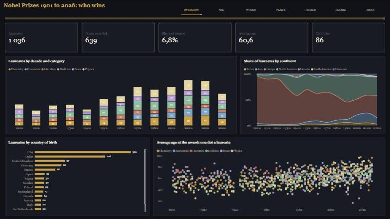
1,036 Nobel Prize entries: the average laureate was 54.6 years old in 1901-1945 and 66.0 in 1990-2026, 6.8% are women (18.6% in the 2020s) and the United States, birthplace of 309 laureates, went from 12% to 38% of the entries. A black-and-gold look with a serif title and a dot for the age of every laureate.
October 23, 2026
Sunspots Since 1749: The Sun's Cycles
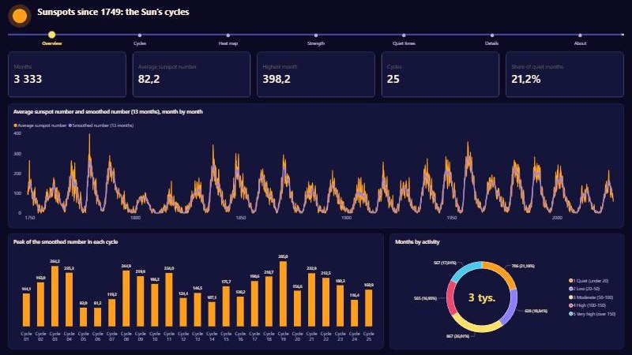
3,333 months of sunspots cut into 25 solar cycles: a cycle lasts 11.0 years on average, cycle 19 peaked at 285 in 1958 and cycle 24 was the weakest since cycle 14. Deep indigo with a glowing sun, one line for every cycle drawn from its own minimum and a cycle-by-year heat map.
October 23, 2026
Earthquakes of Magnitude 6 and Over, 1950 to 2025
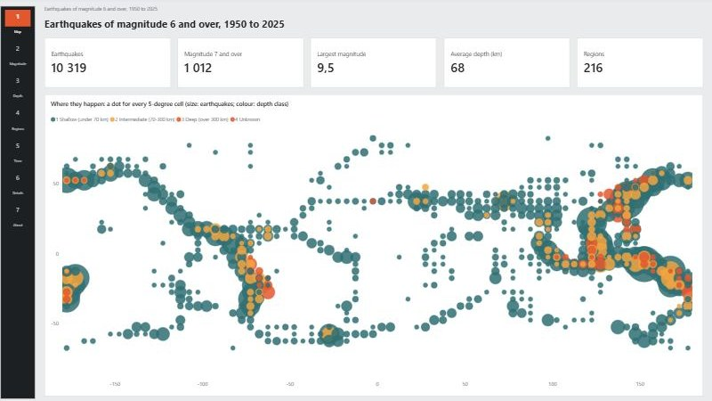
10,319 earthquakes: every whole point of magnitude means about ten times fewer, 82% are shallower than 70 km and Fiji has 217 of the 605 deep ones. A light report with a slim numbered rail and a dot map of 5-degree cells built without any map service.
October 22, 2026
America's Biggest Cities, 1790 to 2020
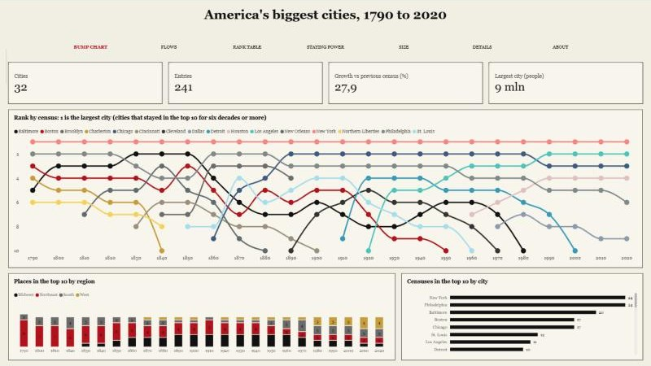
The ten most populous US places at each of 24 censuses: New York is first every time, Chicago held second from 1890 to 1980 and Los Angeles has since 1990, and the Northeast fell from 9 of the 10 places to 2. A newspaper front-page look in black and red, built around a bump chart of ranks.
October 22, 2026
Who Lives in America: Age, Sex and Generations
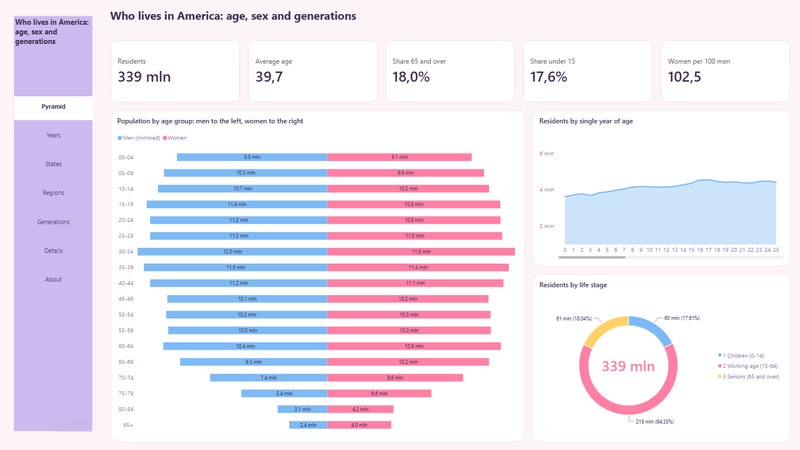
339 million residents in 2024 with an average age of 39.7: people 65 and over grew from 54.5 to 61.2 million since 2020 while children under 15 fell, Maine is the oldest state and Utah the youngest. Pink and lavender pastels with population pyramids and a tile-grid map of the states.
October 22, 2026
Central Park Since 1869: How New York's Weather Has Changed
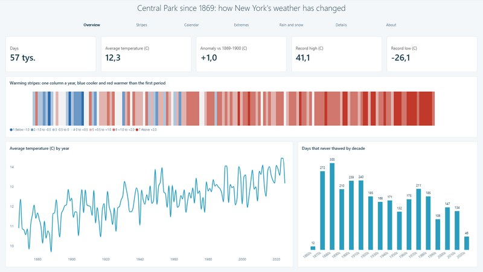
57,343 days of weather: the average temperature rose from 11.3 °C in 1869-1900 to 13.8 °C in 2016-2025, and days that never thawed fell from 300 in the 1880s to 134 in the 2010s. An airy ice-blue look with warming stripes and a month-by-day heat map.
October 19, 2026
US Tornadoes 1950-2023: Where, When and How Strong
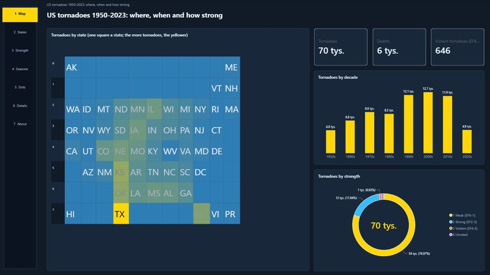
70,022 US tornadoes from 1950 to 2023: Texas has the most (9,345) but Alabama the most deaths (677), and the 646 violent ones (0.9%) caused 62% of the 6,221 deaths. A slate-blue theme with a numbered rail and, because Bing maps are being retired, a tile-grid map built without any map service.
October 19, 2026
US Economy Since 1990: Prices, Jobs and Interest Rates
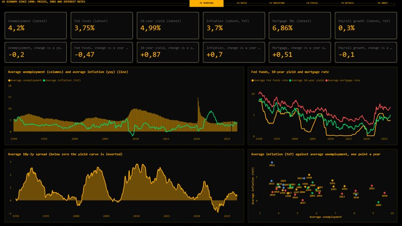
441 months of the US economy from FRED: the latest values and their change against a year earlier, unemployment from 3.4% to 14.8%, and a yield curve that was inverted in 52 months. An amber-on-black market-terminal theme with function-key tabs.
October 19, 2026
Cars Since 1984: What a Gallon Buys
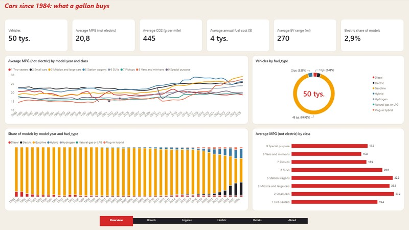
49,868 vehicle variants tested by the EPA, 1984-2026: average MPG rose from 19.9 to 24.2, SUVs and pickups went from 21% to 63% of the models on offer, and electric cars reached an average range of 302 miles. A cream and racing-red theme with a floating dock and a shaded brand ranking.
October 18, 2026
Garment Factory: Which Teams Hit Their Target?
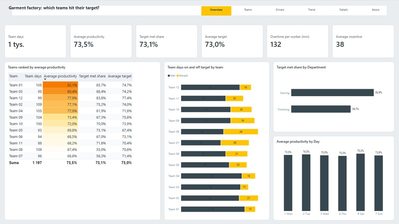
1,197 team-days in a garment factory: the teams average 73.5% productivity against a 73.0% target, from 66.8% for the weakest team to 82.1% for the best, and sewing meets its target on 83% of days against 60% for finishing. A light grey theme with a floating header card, a ranked table with shaded cells and outcomes against target.
October 18, 2026
Students: What Goes With a Good Final Grade?
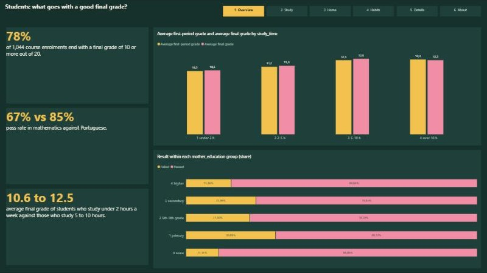
1,044 course enrolments of Portuguese secondary-school students: 78% pass, 85% in Portuguese against 67% in mathematics, and the average grade climbs from 10.6 to 12.5 with study time. A dark green chalkboard theme with a commentary card beside the charts on every page.
October 18, 2026
Beijing Air: How Often Is It Unhealthy?
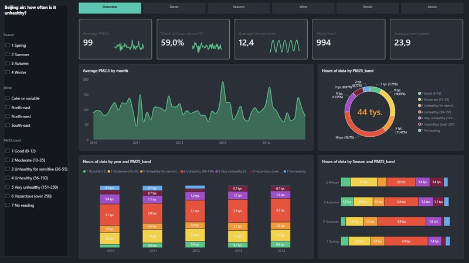
43,824 hourly PM2.5 readings in Beijing (2010-2014): 59% of the hours with a reading were above 55 µg/m³, winter averages 113 against 87 in spring, and the air is cleanest with a north-west wind. A charcoal theme with an air-quality colour scale, stacked bands and a filter panel on the left.
October 17, 2026
I-94 Traffic: When Is the Road Busy?
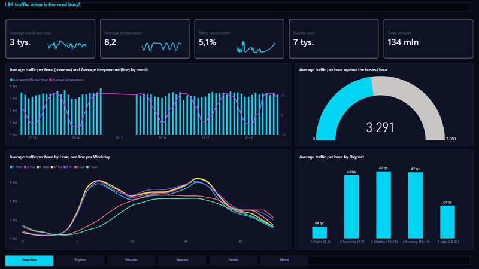
Hourly traffic on Interstate 94 near Minneapolis (40,575 hours, 2012-2018) with the weather: an average hour sees 3,291 vehicles and the afternoon peak about 5,700. A neon dark theme with a weekday-by-hour heat map, a combo chart, a gauge, a waterfall and a ribbon chart. The record has a gap from September 2014 to May 2015, which the report shows.
October 17, 2026
Diabetes Patients: Who Comes Back Within 30 Days?
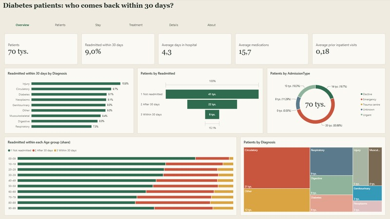
69,970 first hospital stays of patients with diabetes in 130 US hospitals: 9.0% come back within 30 days, from 4.9% for teenagers to 10.8% for people in their eighties. A cream paper theme with a serif headline, a funnel, a ribbon chart, a waterfall and 100% stacked bars.
October 17, 2026
Wine Quality: What Makes a Good Wine?
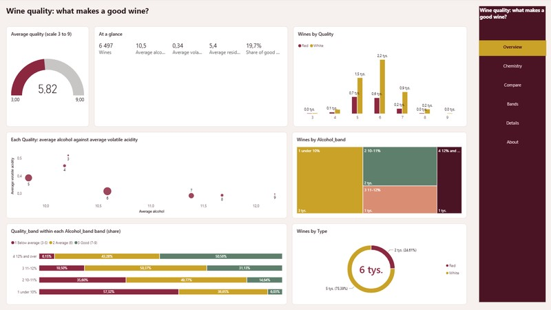
6,497 Portuguese red and white wines with eleven lab measurements and a taster's score: average quality climbs from 5.45 for wines under 10% alcohol to 6.54 above 12%, while sugar hardly matters. A warm white theme with a burgundy menu on the right, a gauge, small multiples and red against white.
October 15, 2026
Online Shoppers: Who Buys?
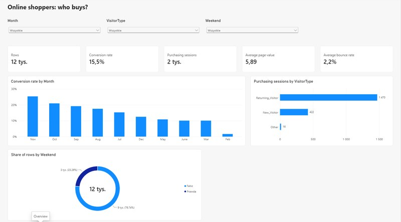
12,330 browsing sessions of an online shop: 15.5% end with a purchase, and the report shows how that conversion rate changes by month, type of visitor and traffic source. Six pages in a dark blue theme, with dropdown filters in the header, page tabs and hover tooltips, built on a public UCI dataset.
October 15, 2026
Who Earns Over 50K? US Census Adults
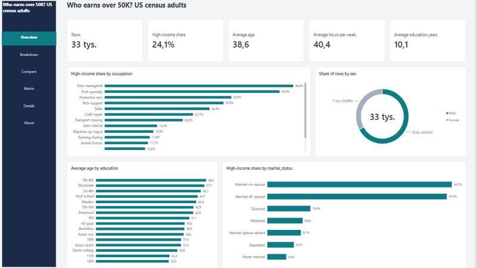
32,561 adults from a 1994 US census extract: 24.1% earn more than 50,000 dollars a year, and the share runs from 4.6% to 44.7% by marital status and from 4.2% to 48.4% by occupation. Six pages in a brown and orange theme, with tabs in the top bar, a Filters pane and hover tooltips.
October 15, 2026
Seoul Bike Sharing: When Do People Ride?
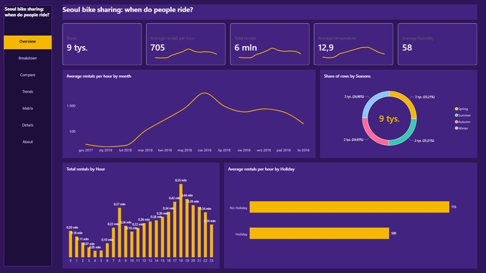
A year of hourly bike rentals in Seoul (about 6.2 million) with the weather at each hour: rentals by month, hour of the day and season, with commuting peaks in the morning and evening. Seven pages in a purple theme, with a side menu, KPI tiles with trend lines, a Filters pane and hover tooltips.
October 3, 2026
F1 Analytics: Fabric Lakehouse to Power BI
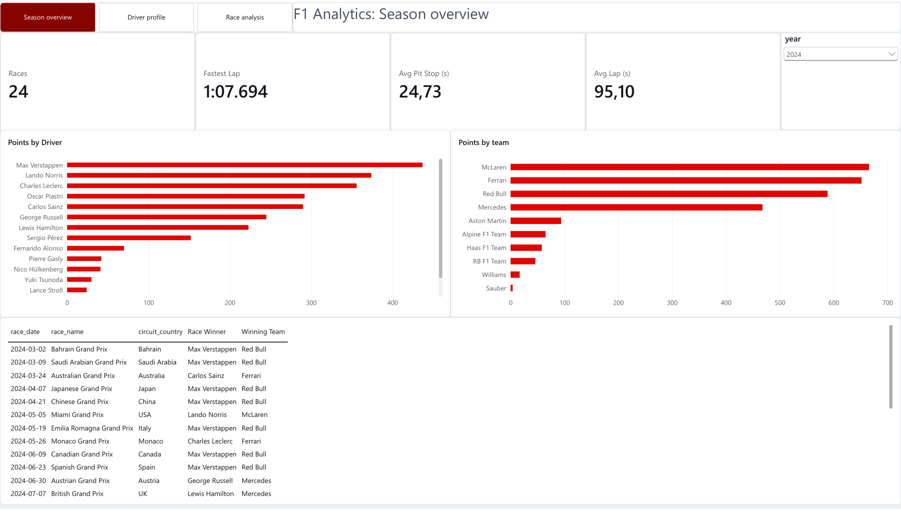
An end-to-end pipeline on Microsoft Fabric: raw Kaggle CSVs, a PySpark notebook, bronze/silver/gold Delta tables, a star-schema Direct Lake model and a three-page report on 75 seasons of Formula 1 (590,000 laps).
October 2, 2026
Olist E-commerce: Revenue, Delivery & Reviews
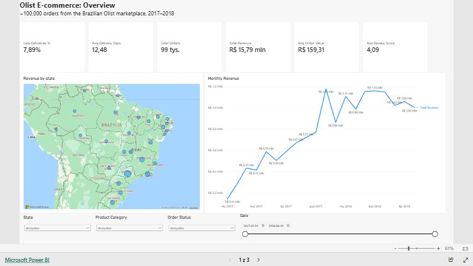
A relational model of ~100,000 orders from the Brazilian Olist marketplace — revenue by state and month, delivery performance, and how late deliveries drag review scores down.
September 30, 2026
Steam Games: Price vs Popularity
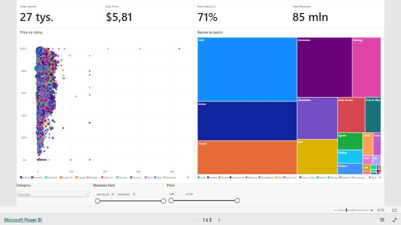
Price, review score, genre and ownership analysis for 27,000+ games on the Steam store — does a higher price mean a better rating? Built on public SteamSpy estimates.
February 28, 2023
Twitter Trends
Twitter Trends is a feature on the social media platform Twitter that displays the most popular and widely discussed topics at any given time.
February 13, 2023
Harry Potter
Movie Scripts
The Harry Potter movies are a series of eight films based on the Harry Potter book series written by British author J.K. Rowling.
February 06, 2023
NYC Pizza Slice
Starting in 2014, Liam Quigley logged every slice of pizza he ate in New York on the Instagram account NYC Slice. The results presented below were collected from 464 sections. In eight years, the average price of a regular piece has increased from $2.52 to $3.00.
February 04, 2023
Who do we spend time with
across our lifetime?
As we go through life we build personal relationships with different people – family, friends, coworkers, partners. These relationships, which are deeply important to all of us, evolve with time.
February 04, 2023
Comparison of worldwide
cost of living
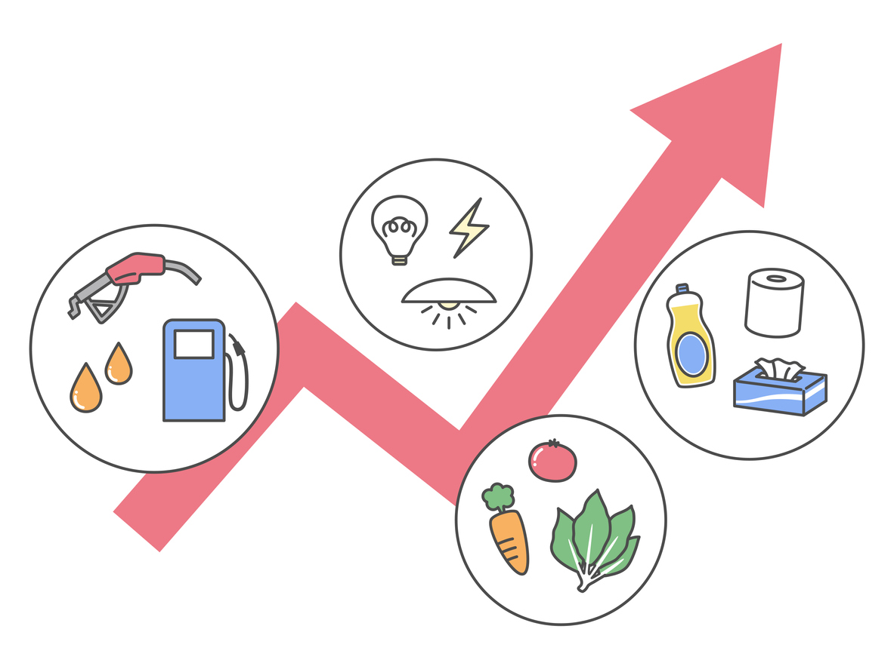
The cost of living in different countries varies widely and is influenced by a number of factors such as the country's economy, its standard of living, availability and cost of resources, and its local currency value.
February 03, 2023
Top 10 Countries by
Military Spending
Understanding the military spending of different countries can help us gain insights into their geopolitical priorities, economic and political capabilities, and potential impact on global security and stability.